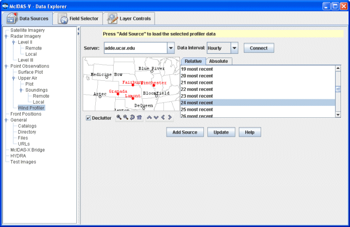

Choosing NOAA National Profiler Network Data
The Point Observations->Wind Profiler chooser allows you
to access NOAA National Profiler Network data on ADDE servers. For more information
on how to use this chooser, see Getting
Started - Displaying Profiler Data.

Image 1: Wind Profiler Chooser
Properties
- Server - Selects the server to be used. Enter in a server name or choose one from the pulldown menu. Right click in the entry box to manage your ADDE servers and to delete the server from the list.
 Manage - Manages the list of servers by opening the ADDE Servers tab of the User Preferences window.
Manage - Manages the list of servers by opening the ADDE Servers tab of the User Preferences window.- Dataset - Selects the dataset to be used. Enter in a dataset name or choose one from the pulldown menu.
 Public
Servers - Lists the public datasets available on the server
Public
Servers - Lists the public datasets available on the server -
Connects to and queries the server for available times.
-
Connects to and queries the server for available times.- Profiler Type - Selects a profiler type.
- Station Map - Displays the stations on the map. Select a station using the map. Left clicking on a station will select it. For multiple selections, Shift+drag will select all stations within a region. Ctrl+drag will add the stations in the selected region to the set of already selected stations. Pressing the Ctrl+A key will select all stations. Right-clicking in the map will bring up a menu that allows you to select all stations and to clear the selection. The Declutter checkbox allows you to show all stations (not checked), or only a limited number of stations that do not overlap each other (checked). You will need to zoom in to see all the stations without overlaps. Use the Zooming and Panning options to locate a station, or the following buttons:
 Zoom
In - Zooms in over the current map area.
Zoom
In - Zooms in over the current map area. Zoom
Out - Zooms out over the current map area.
Zoom
Out - Zooms out over the current map area. Previous
Map Area - Returns to the previous map area.
Previous
Map Area - Returns to the previous map area. Home
Map Area - Returns to the default map area.
Home
Map Area - Returns to the default map area. Move
View Up - Moves the view up (map down).
Move
View Up - Moves the view up (map down). Move
View Down - Moves the view down (map up).
Move
View Down - Moves the view down (map up). Move
View Left - Moves the view left (map right).
Move
View Left - Moves the view left (map right). Move
View Right - Moves the view right (map left).
Move
View Right - Moves the view right (map left).
- Times: Relative - Allows you
to select a group of up to the last 50 times.
- Times: Absolute - Allows you to choose one or more absolute times. When choosing absolute times for the first time McIDAS-V needs to query the ADDE server for the times. This may take some time. To select more than one time use Ctrl+click or Shift+click. See the Timeline Controls section for details on its use. Click on the
 Select Day button to narrow down a large dataset to one day.
Select Day button to narrow down a large dataset to one day.
- Interval - Selects an interval to use for the data.
 Help -
Brings up this help page.
Help -
Brings up this help page. Refresh -
Updates the National Profiler Network Data with the most recent data.
Refresh -
Updates the National Profiler Network Data with the most recent data. Cancel -
Cancels the query of data and stations. The chooser will reset back to default.
Cancel -
Cancels the query of data and stations. The chooser will reset back to default. -
Loads the selected profiler data.
-
Loads the selected profiler data.